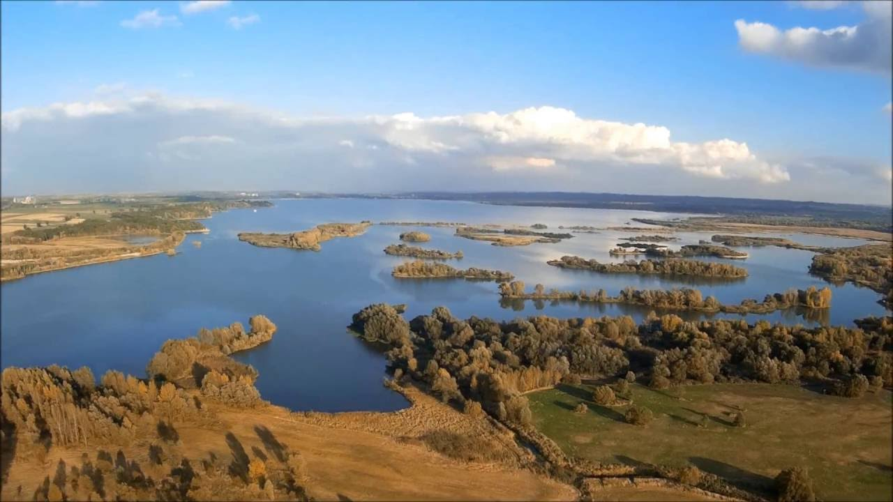
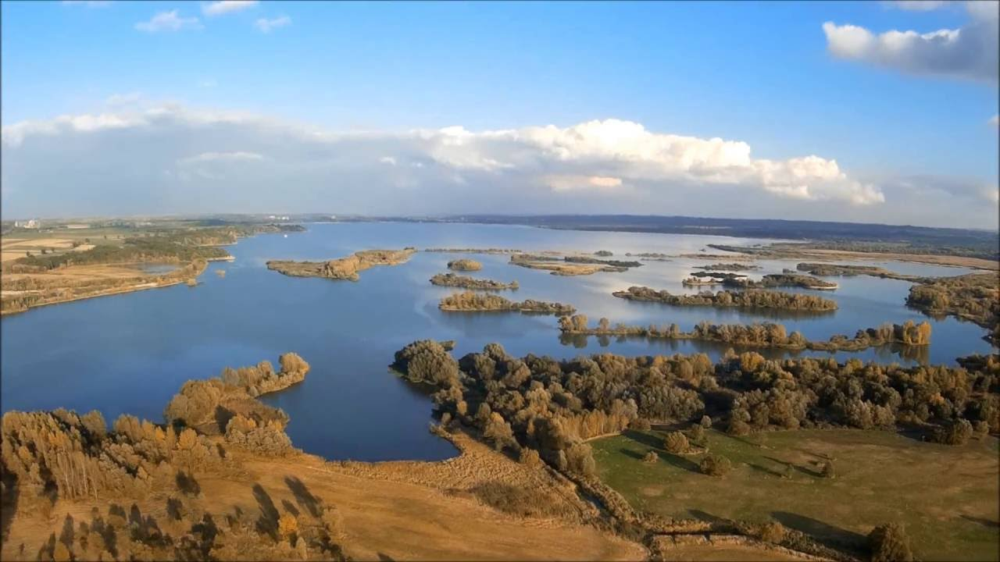

Jezioro Nyskie
 Jezioro Nyskie powstało w 1971 roku na Nysie Kłodzkiej, przez zalanie obszarów gminy Nysa. Większość zalanych obszarów stanowiły lasy, lecz trzeba było również wysiedlić i relokować mieszkańców Miedniki, Brzeziny Polskiej, część domów ze Skorochowa i najniższą część wsi Głębinów. Główny punkt plażowy znajduje się w Skorochowie, który jest znany pod nazwą „Polskiej Copacabany”. Najwięcej ludzi przyciąga tutaj na „Festiwal Wody i Ognia”, który jest organizowany od dziesięciu lat. Zjeżdżają wtedy tutaj turyści nie tylko z ościennych województw, ale i z Czech i Niemiec, tylko po to aby zobaczyć przepiękny spektakl fajerwerków na niebie.
Jezioro Nyskie powstało w 1971 roku na Nysie Kłodzkiej, przez zalanie obszarów gminy Nysa. Większość zalanych obszarów stanowiły lasy, lecz trzeba było również wysiedlić i relokować mieszkańców Miedniki, Brzeziny Polskiej, część domów ze Skorochowa i najniższą część wsi Głębinów. Główny punkt plażowy znajduje się w Skorochowie, który jest znany pod nazwą „Polskiej Copacabany”. Najwięcej ludzi przyciąga tutaj na „Festiwal Wody i Ognia”, który jest organizowany od dziesięciu lat. Zjeżdżają wtedy tutaj turyści nie tylko z ościennych województw, ale i z Czech i Niemiec, tylko po to aby zobaczyć przepiękny spektakl fajerwerków na niebie.